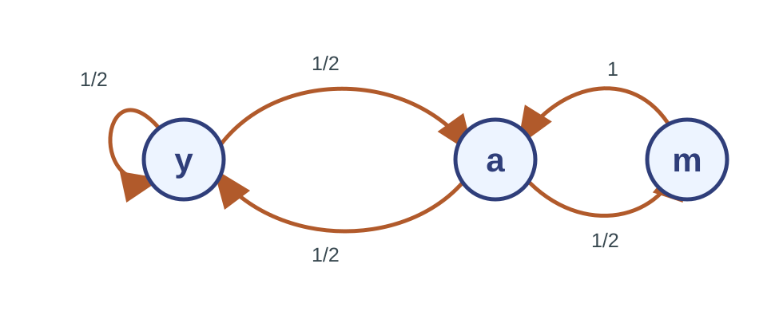
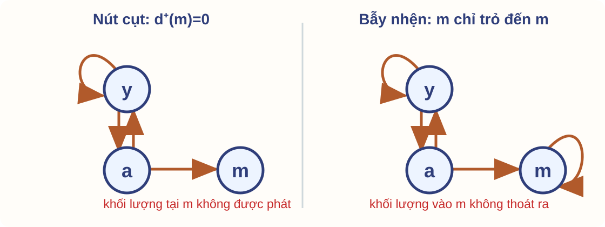
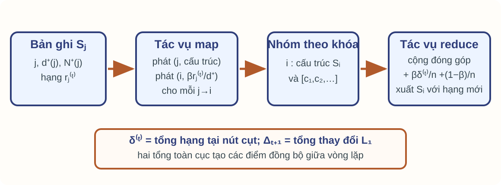
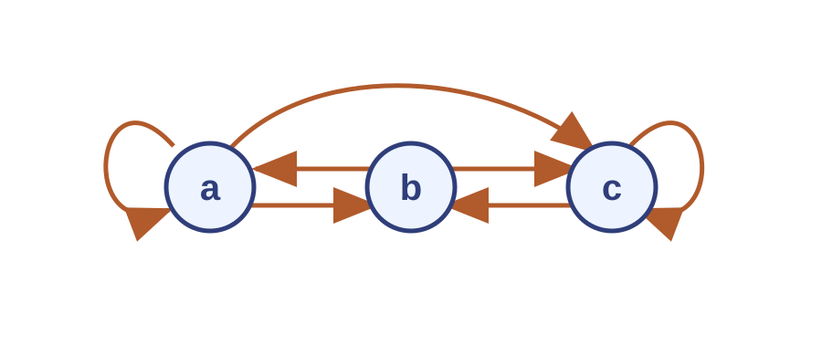

PageRank: mô hình và tính toán
Bài 3 · Giải thuật nền tảng của Khoa học dữ liệu
Năm học 2026–2027 · Học kỳ 1
Trường Đại học Công nghệ · Đại học Quốc gia Hà Nội
MapReduce của Bài 2 cung cấp cơ chế phân phối tính toán. Buổi này xây dựng đại lượng cần tính trên đồ thị liên kết, rồi đưa một vòng lặp sang mô hình đó. Nguồn chính: MMDS 3e, Chương 5, mục 5.1–5.2; bộ trang chiếu chính thức MMDS Chương 5, phần 1, http://www.mmds.org.
Mục tiêu học tập
Lập phương trình PageRank từ đồ thị có hướng.
Sửa cột của nút cụt và thêm dịch chuyển ngẫu nhiên.
Chạy phép lặp lũy thừa và nêu đúng điều kiện hội tụ.
Biểu diễn ma trận thưa và thiết kế một vòng lặp bằng MapReduce.
Kiểm tra kết quả bằng chuẩn hóa, phần dư và trường hợp biên.
Kiến thức đầu vào: đồ thị có hướng, phép nhân ma trận–vector, phân phối xác suất và luồng khóa–giá trị của Bài 2. Kết quả cần đạt là một đặc tả PageRank có mô hình chuyển, điều kiện hội tụ và một vòng tính phân tán. Phạm vi dừng ở PageRank cơ sở.
Xếp hạng trên đồ thị liên kết lớn Đầu vào là danh sách cạnh thưa của Web; đầu ra là một điểm quan trọng cho mỗi trang.
Ta cần xếp hạng các trang trong đồ thị liên kết Web. Ma trận đặc có n² ô, trong khi đầu vào tự nhiên chỉ có m cạnh; với đồ thị lớn, phải quét biểu diễn thưa và không thể giải hệ tuyến tính đặc trên một máy. Nguồn: MMDS mục 5.1–5.2 và slide MMDS trang 48, 53.
Đồ thị và đầu ra cần tính
Đầu vào Đồ thị có hướng $G=(V,E)$, $n=|V|$ trang và $m=|E|$ liên kết.
$j\to i$ nghĩa là trang $j$ trỏ đến trang $i$.
Đầu ra Vector $r\in\mathbb{R}^n$, $r_i\ge 0$ và $\sum_i r_i=1$.
$r_i$ là khối lượng xếp hạng của trang $i$.
Theo MMDS, gộp liên kết lặp giữa cùng hai trang; cho phép vòng tự nối. $d^+(j)$ đếm các đích phân biệt sau khi gộp.
Nêu quy ước cột ngay từ đầu để tránh đảo chỉ số khi dựng ma trận. MMDS mô hình hóa một cạnh cho mỗi cặp trang có liên kết; vì vậy deck gộp liên kết lặp trước khi tính bậc ra. Vòng tự nối vẫn là một cạnh hợp lệ. Nguồn: MMDS mục 5.1.1–5.1.2 và 5.2.1.
Người lướt Web ngẫu nhiên
Một bước Đang ở trang $j$, chọn đều một liên kết ra và đi đến trang đích.
Điểm xếp hạng Xác suất dài hạn người lướt ở trang $i$.
Câu hỏi: trang có nhiều liên kết vào luôn có PageRank lớn hơn không?
Không. Bậc vào chỉ đếm số liên kết; PageRank còn phụ thuộc chất lượng của các trang trỏ đến.
Bậc vào không đủ quyết định PageRank. Một liên kết từ trang có hạng cao truyền nhiều khối lượng hơn liên kết từ trang có hạng thấp; phương trình luồng làm rõ điều này. Nguồn: Stanford trang 17–18 và MMDS mục 5.1.2.
Mỗi liên kết chia một phần phiếu
$r_i=\sum_{j:\,j\to i}\frac{r_j}{d^+(j)}$
Nút $j$ chia đều $r_j$ cho các cạnh ra. Nút $i$ cộng các phần nhận từ mọi tiền nhiệm. Phương trình chỉ có nghĩa trực tiếp khi $d^+(j)>0$. Đây là phương trình luồng của MMDS. Nút cụt chưa được xử lý; không chia cho 0. Đồ thị y,a,m cho phép theo vết từng phần khối lượng. Nguồn: slide MMDS trang 18–21; MMDS mục 5.1.2.
Từ đóng góp trên cạnh đến ma trận Theo vết từng phần khối lượng trước khi gom chúng thành một cột ma trận.
Ví dụ chạy tay cụ thể hóa phương trình theo cạnh. Ma trận chỉ xuất hiện sau khi đã xác định mỗi nút phát gì và mỗi nút đích cộng gì. Nguồn: slide MMDS trang 18–24; MMDS mục 5.1.2.
Ví dụ xuyên suốt với ba nút

Theo vết: y có hai cạnh ra nên mỗi cạnh nhận r_y/2; a có hai cạnh ra; m có một cạnh ra. Đồ thị và nhãn y,a,m theo slide MMDS trang 19 và 24.
Chạy tay đóng góp ở vòng đầu
$r^{(0)}=(1/3,1/3,1/3)^T$ theo thứ tự $(y,a,m)$.
Nút nguồn Phát theo cạnh Nút nhận y $1/6$ trên mỗi cạnh y, a a $1/6$ trên mỗi cạnh y, m m $1/3$ a
$r^{(1)}=(1/3,1/2,1/6)^T$.
Cộng theo đích: y nhận 1/6 từ y và 1/6 từ a; a nhận 1/6 từ y và 1/3 từ m; m nhận 1/6 từ a. Phép nhân ma trận phải tái tạo đúng trạng thái này. Nguồn: slide MMDS trang 18–21 và 25–27.
Ma trận chuyển dùng cột nguồn
$P_{ij}=\begin{cases}1/d^+(j),&j\to i,\\0,&\text{ngược lại,}\end{cases}\qquad P=\begin{bmatrix}1/2&1/2&0\\1/2&0&1\\0&1/2&0\end{bmatrix}$
Thứ tự hàng và cột: $(y,a,m)$.
Ba cột mã hóa đúng các đóng góp vừa tính: cột y là (1/2,1/2,0)^T; cột a là (1/2,0,1/2)^T; cột m là (0,1,0)^T. Mỗi cột cộng thành 1 vì đồ thị chưa có nút cụt. Nguồn: slide MMDS trang 21 và 24.
Một bước là phép nhân ma trận–vector
$r^{(t+1)}=Pr^{(t)},\qquad r^{(0)}=\begin{bmatrix}1/3&1/3&1/3\end{bmatrix}^{\!T}$
$t$ $r_y^{(t)}$ $r_a^{(t)}$ $r_m^{(t)}$ Tổng 0 $1/3$ $1/3$ $1/3$ 1 1 $1/3$ $1/2$ $1/6$ 1 2 $5/12$ $1/3$ $1/4$ 1
Dòng t=1 lặp lại kết quả chạy tay của vòng đầu. Ở t=2, nhân thêm một lần với P. Tổng bằng 1 vì P không âm và mọi cột cộng 1. Bảng khớp slide MMDS trang 26.
Điểm cố định của ví dụ
$r=Pr,\qquad r_y+r_a+r_m=1$
$r=\begin{bmatrix}2/5&2/5&1/5\end{bmatrix}^{\!T}$
Câu hỏi: thay vector này vào ba phương trình luồng để kiểm tra.
Thay trực tiếp cho $y=\frac12\frac25+\frac12\frac25=\frac25$, $a=\frac12\frac25+\frac15=\frac25$ và $m=\frac12\frac25=\frac15$. Điều kiện tổng 1 cố định hệ số tỉ lệ. Nguồn: slide MMDS trang 19–20.
Phép lặp chưa tự bảo đảm hội tụ
Ma trận cột ngẫu nhiên có thể có chu kỳ. Đồ thị hai nút $1\to2\to1$ làm vector hạng dao động.
Bất khả quy: từ mỗi nút đi được đến mọi nút khác; điều kiện đủ cho phân phối dừng duy nhất.Không chu kỳ: ước chung lớn nhất của các độ dài quay về một nút bằng 1; điều kiện đủ để phép lặp hội tụ từ mọi phân phối đầu.Phản ví dụ: với chu trình hai nút và trạng thái đầu $(1,0)^T$, dãy hạng là $(1,0)^T,(0,1)^T,(1,0)^T,\ldots$ nên không hội tụ dù đồ thị bất khả quy.
Hai mệnh đề tách riêng: bất khả quy cho phân phối dừng duy nhất; không chu kỳ cho hội tụ của phép lặp từ mọi phân phối đầu. Định nghĩa chu kỳ chính xác: chu kỳ của một nút là gcd của các độ dài d>0 với P^d(i,i)>0; đồ thị không chu kỳ khi gcd này bằng 1 tại mọi nút. Phản ví dụ: chu trình hai nút, trạng thái đầu (1,0)^T cho dãy (1,0),(0,1),(1,0),… nên không hội tụ dù đồ thị bất khả quy. Không tuyên bố bất khả quy là điều kiện cần cho duy nhất: chuỗi hữu hạn khả quy vẫn có thể có đúng một lớp đóng và một phân phối dừng duy nhất. Điều kiện không chu kỳ dựa trên lý thuyết chuỗi Markov hữu hạn; MMDS mục 5.1.2 chỉ nêu bất khả quy.
Sửa nút cụt và bẫy nhện PageRank chuẩn hóa cần một ma trận chuyển hợp lệ và một xác suất thoát khỏi nhóm kín.
Hai biến thể cùng xuất phát từ đồ thị y,a,m: biến thể thứ nhất bỏ cạnh ra của m; biến thể thứ hai thay cạnh m→a bằng vòng m→m. Trước khi xét phép lặp và hội tụ, ta phải sửa ma trận chuyển thành ma trận cột-ngẫu nhiên hợp lệ. Nguồn: slide MMDS trang 38–46; MMDS mục 5.1.4–5.1.5.
Hai biến thể của đồ thị $y,a,m$

Bên trái, y trỏ đến y và a; a trỏ đến y và m; m không có cạnh ra. Bên phải giữ hai nút y,a nhưng m chỉ trỏ đến chính nó. Hai biến thể này theo slide MMDS trang 39 và 41.
Nút cụt làm mất khối lượng sau một bước
$r^{(0)}=(1/3,1/3,1/3)^T$
$r_y$ $r_a$ $r_m$ Tổng trước bước $1/3$ $1/3$ $1/3$ $1$ sau bước với cột m bằng 0 $1/3$ $1/6$ $1/6$ $2/3$
Khối lượng 1/3 tại m không được phát đi. y nhận 1/6 từ y và 1/6 từ a; a nhận 1/6 từ y; m nhận 1/6 từ a. Dòng đầu của dãy số khớp biến thể nút cụt ở slide MMDS trang 41. Không tiếp tục lặp vì mục tiêu ở đây là thấy đúng nơi khối lượng bị mất.
Sửa cột nút cụt bằng phân phối đều
$P_{ij}=\begin{cases}1/d^+(j),&d^+(j)>0\ \text{và}\ j\to i,\\1/n,&d^+(j)=0,\\0,&\text{còn lại.}\end{cases}$
$r^{(1)}=(4/9,5/18,5/18)^T,\qquad e^Tr^{(1)}=1$
Thay cột m bằng (1/3,1/3,1/3)^T. Từ trạng thái đều, mỗi nút nhận thêm 1/9 từ m; tổng trở lại 1. Quy ước này tương đương việc người lướt chọn đều một nút khi đang ở nút cụt. Nguồn: slide MMDS trang 42 và 44. Giáo trình còn mô tả quy ước giữ cột 0; bài giảng chọn bản chuẩn hóa.
Bẫy nhện giữ dần toàn bộ khối lượng
$t$ $r_y^{(t)}$ $r_a^{(t)}$ $r_m^{(t)}$ 0 $1/3$ $1/3$ $1/3$ 1 $1/3$ $1/6$ $1/2$ 2 $1/4$ $1/6$ $7/12$ $\cdots$ $0$ $0$ $1$
Dãy tiến về $(0,0,1)^T$ khi số vòng tăng; không vòng hữu hạn nào đạt giá trị này.
Trong biến thể bẫy nhện, m có vòng tự nối và không có cạnh ra khỏi m. Khối lượng đến m không trở lại y hoặc a. Các thành phần của y và a giảm theo cấp số nhân về 0, thành phần của m tiến về 1; đây là giới hạn của dãy, không phải kết quả sau hữu hạn vòng. Dãy số lấy trực tiếp từ slide MMDS trang 39.
Hệ số giảm tạo đường thoát khỏi bẫy
$e=(1,\ldots,1)^T,\qquad U=\frac{ee^T}{n},\qquad A_\beta=\beta P+(1-\beta)U$
Với xác suất $\beta$, đi theo một cạnh của $P$. Với xác suất $1-\beta$, dịch chuyển đều đến một nút. Điều kiện: $0<\beta<1$. U có mọi phần tử bằng 1/n. Vì P đã sửa cột nút cụt, Aβ là ma trận cột ngẫu nhiên. Dịch chuyển ngẫu nhiên tạo xác suất rời bẫy ở mọi bước. Nguồn: slide MMDS trang 40, 44–45; MMDS mục 5.1.5.
Bẫy nhện sau khi thêm hệ số giảm
$A_{0,8}=\begin{bmatrix}7/15&7/15&1/15\\7/15&1/15&1/15\\1/15&7/15&13/15\end{bmatrix}$
$r^{(1)}=A_{0,8}(1/3,1/3,1/3)^T=(1/3,1/5,7/15)^T$
Đây là biến thể bẫy nhện có vòng m→m trong slide MMDS trang 46. Sau khi thêm hệ số giảm, m vẫn nhận nhiều khối lượng nhưng y và a luôn nhận phần dịch chuyển. Ma trận này không phải ma trận của đồ thị cơ sở.
Thuật toán có giới hạn vòng lặp
đầu vào: P cột ngẫu nhiên đã sửa nút cụt (P = P̄), 0 < β < 1, ε > 0,
K_max ∈ ℕ và K_max ≥ 1
τ ← (1−β)ε/β; r ← e/n
cho k từ 1 đến K_max:
r_mới ← βPr + (1−β)e/n
nếu ||r_mới − r||₁ ≤ τ thì trả (r_mới, đúng, k)
r ← r_mới
trả (r, sai, K_max)$P$ là ma trận cột ngẫu nhiên đã sửa nút cụt, tức $P=\bar P$; cờ đúng bảo đảm sai số $L_1$ không quá $\varepsilon$, bảo đảm này được chứng minh ở phần hội tụ.
Ở đây $P$ là ma trận đã sửa cột nút cụt, tức $P=\bar P$. Bất biến: $r$ không âm và $e^Tr=1$. Nếu trả cờ đúng, cận hậu nghiệm bảo đảm khoảng cách đến nghiệm không quá $\varepsilon$. Nếu hết $K_{\max}$, thuật toán vẫn trả một phân phối nhưng không tuyên bố đạt ngưỡng sai số. Nguồn cơ chế lặp: MMDS mục 5.1.2, 5.1.5 và slide 25, 45, 51–52.
Điều kiện hội tụ và kiểm tra kết quả Dịch chuyển ngẫu nhiên làm ma trận dương và tạo một ánh xạ co trên các phân phối xác suất.
Phần này thay cho mệnh đề hội tụ thiếu điều kiện của phép lặp không có hệ số giảm trong MMDS. Chỉ chứng minh cho 0<β<1 và P đã sửa cột nút cụt.
$A_\beta$ là ma trận dương
$(A_\beta)_{ij}=\beta P_{ij}+\frac{1-\beta}{n}\ge\frac{1-\beta}{n}>0$
Mọi cột cộng thành 1. Mọi trạng thái có xác suất đi đến mọi nút sau một bước. Tồn tại duy nhất một phân phối dừng $r^*=A_\beta r^*$. Giả thiết: n hữu hạn và dương, 0<β<1, P cột ngẫu nhiên. Tính dương cho phép dùng định lý Perron–Frobenius hoặc lý thuyết chuỗi Markov để kết luận phân phối dừng duy nhất. Không áp dụng kết luận này cho β=1. Nguồn: MMDS mục 5.1.5 và slide MMDS trang 45.
Ánh xạ co theo chuẩn $L_1$
$\|A_\beta x-A_\beta y\|_1=\beta\|P(x-y)\|_1\le\beta\|x-y\|_1$
Với $x$ và $y$ là hai phân phối xác suất, sau một vòng khoảng cách giữa chúng không quá $\beta$ lần khoảng cách trước.
Trên mặt trang, $x$ và $y$ là hai phân phối xác suất: $x,y\ge0$ và $e^Tx=e^Ty=1$, nên $U(x-y)=0$. Vì P không âm và cột ngẫu nhiên, ||Pz||₁≤||z||₁. Với β=0,8, hai vector cách nhau 0,10 trước bước thì sau bước cách nhau không quá 0,08. Hệ số co cho hội tụ hình học đến điểm cố định duy nhất.
Tiêu chí dừng và sai số
$\|r^{(t)}-r^*\|_1\le\frac{\beta}{1-\beta}\,\|r^{(t)}-r^{(t-1)}\|_1$
Ngưỡng phần dư $\tau=(1-\beta)\varepsilon/\beta$
Bảo đảm khi dừng $\|r^{(t)}-r^*\|_1\le\varepsilon$
Đặt Δ_t=||r^t−r^{t−1}||₁. Các bước sau thỏa Δ_{t+k}≤β^kΔ_t, nên khoảng cách từ r^t đến giới hạn không quá βΔ_t+β²Δ_t+…=βΔ_t/(1−β). Vì vậy thuật toán dùng τ cho phần dư và ε cho sai số đích.
Kết quả của đồ thị cơ sở có hệ số giảm
$r^*=\begin{bmatrix}35/93&37/93&21/93\end{bmatrix}^{T}\approx\begin{bmatrix}0{,}376&0{,}398&0{,}226\end{bmatrix}^{T}$
Kiểm tra đại số $A_{0,8}r^*=r^*$.
Kiểm tra xác suất $r^*\ge0$ và $e^Tr^*=1$.
Áp dụng $A_{0,8}$ cho đồ thị cơ sở $y\to y,a$; $a\to y,m$; $m\to a$, không phải biến thể bẫy nhện.
Áp dụng $A_{0,8}$ trên đồ thị cơ sở y→y,a; a→y,m; m→a, không phải biến thể bẫy nhện hay đồ thị trong Hình 5.7. Nghiệm được tính bằng khử Gauss trên (I−0,8P)r=0,2e/3; tổng tử số là 93.
Thêm cạnh $m\to y$ đổi đúng một cột
Câu hỏi: sau khi thêm cạnh $m\to y$, hãy viết cột nguồn $m$ và các đóng góp mà $m$ phát ở vòng kế tiếp.
Trước: $(0,1,0)^T$. Sau: $(1/2,1/2,0)^T$ theo thứ tự $(y,a,m)$.
m có hai cạnh ra, đến y và a, nên phát r_m/2 cho mỗi nút. Các cột y và a không đổi. Nguồn tham khảo: Stanford trang 33–36; dữ liệu là đồ thị y,a,m của MMDS.
Tính PageRank trên đồ thị thưa Một vòng lặp quét các nút, các cạnh và hai vector hạng; không dựng ma trận đặc.
Ví dụ quy mô trong nguồn $n=10^9$ trang tạo ma trận đặc có $10^{18}$ ô.
Biểu diễn cần dùng Danh sách cạnh và vector có kích thước $\Theta(n+m)$.
Số $10^9$ lấy từ slide MMDS trang 48 để minh họa; không phải số đo Web hiện tại.
MMDS dùng một tỷ trang để cho thấy ma trận đặc không khả thi; con số này là ví dụ nguồn, không phải thống kê hiện thời. Phép tính trên ba nút ở phần trước được giữ nguyên khi chuyển sang biểu diễn thưa ở quy mô lớn. Nguồn: MMDS mục 5.2.1–5.2.2; slide MMDS trang 48, 53–55.
Bản ghi giữ cấu trúc cho vòng sau
Điều kiện trước: biết $V$; mỗi $i\in V$ có đúng một bản ghi $S_i$, kể cả khi $N^+(i)=\varnothing$.
Nút $d^+$ Danh sách đích Hạng hiện tại y 2 y, a $r_y^{(t)}$ a 2 y, m $r_a^{(t)}$ m 1 a $r_m^{(t)}$
$S_j=(j,d^+(j),N^+(j),r_j^{(t)}),\qquad \text{bộ nhớ }\Theta(n+m)$
Tập $V$ phải có sẵn trước vòng lặp. Có đúng một bản ghi cấu trúc $S_i$ cho mỗi $i\in V$, kể cả nút cô lập hoặc nút có danh sách đích rỗng. Bảng biểu diễn đúng đồ thị cơ sở y, a, m theo định dạng nguồn–bậc–đích của MMDS mục 5.2.1. Bản ghi cấu trúc phải được chuyển tiếp qua tác vụ reduce; nếu chỉ phát đóng góp, danh sách đích sẽ mất sau vòng đầu.
Tác vụ map phát cấu trúc và đóng góp
Đọc bản ghi Phát cấu trúc Phát đóng góp theo đích $S_a=(a,2,[y,m],r_a^{(t)})$ $(a,\text{cấu trúc }S_a)$ $(y,\beta r_a^{(t)}/2)$; $(m,\beta r_a^{(t)}/2)$
$P_0$ chỉ chứa cạnh thật và có cột 0 tại nút cụt; nút cụt không phát theo cạnh mà góp vào $\delta^{(t)}$.
Điều kiện trước vẫn là biết $V$ và có đúng một $S_i$ cho mỗi $i\in V$. Mỗi bản ghi luôn phát chính cấu trúc của nó theo khóa nút nguồn. Với mỗi cạnh $j\to i$, map phát thêm đóng góp theo khóa $i$; các đóng góp này tạo $\beta P_0r$. Nút cụt phát cấu trúc nhưng không phát đóng góp cạnh. Nguồn: MMDS mục 5.2.2 và slide 52–55.
Nhóm và reduce không được làm mất nút

Sau khi nhóm theo khóa $i$, reduce cần cả bản ghi cấu trúc $S_i$ và danh sách đóng góp. Bản ghi cấu trúc bảo đảm nút không có cạnh vào vẫn xuất hiện trong đầu ra. Reduce tính hạng mới rồi xuất $S_i$ với $r_i$ mới. Nguồn: MMDS mục 5.2.2.
Hai tổng toàn cục tạo hai điểm đồng bộ
$d_j=\mathbf{1}[d^+(j)=0],\quad \delta^{(t)}=d^Tr^{(t)},\quad \bar P=P_0+ed^T/n$
$r^{(t+1)}=\beta\left(P_0r^{(t)}+\delta^{(t)}e/n\right)+(1-\beta)e/n$
Pha 1 tổng hợp $\delta^{(t)}$. Pha 2 cập nhật hạng và tổng hợp $\Delta_{t+1}=\|r^{(t+1)}-r^{(t)}\|_1$. Một vòng có thể cần hai tác vụ MapReduce. $P_0$ là toán tử thưa với cột nút cụt bằng 0; $\bar P$ là ma trận cột ngẫu nhiên sau khi sửa. Vì $\bar Pr=P_0r+e(d^Tr)/n$, số hạng $\delta e/n$ thay đúng các cột nút cụt chứ không được cộng thêm vào $\bar Pr$. Pha 2 vì thế thêm $\beta\delta^{(t)}/n+(1-\beta)/n$ tại mỗi nút sau khi gom đóng góp cạnh. $\Delta$ có thể thu bằng bộ đếm tổng hợp khi tác vụ cập nhật kết thúc; nó quyết định cờ hội tụ cho vòng kế tiếp. Một tác vụ MapReduce không đồng nghĩa một vòng PageRank.
Chi phí và kiểm tra một vòng
Công việc và giao tiếp $\Theta(n+m)$ mỗi vòng; cần hai điểm đồng bộ khi tính $\delta$ bằng pha riêng.
Câu hỏi Với $r_a^{(t)}=1/3$, map từ a phát những cặp nào? Trong biến thể nút cụt (m không có cạnh ra), m phát gì?
Đáp án phần a trên đồ thị cơ sở: phát cấu trúc $(a,S_a)$, cùng $(y,\beta/6)$ và $(m,\beta/6)$. Trong biến thể nút cụt, m có danh sách đích rỗng nên chỉ phát cấu trúc và đóng góp $r_m^{(t)}$ vào tổng $\delta$; không phát cặp theo cạnh. Mỗi cạnh tạo một đóng góp, mỗi nút chuyển tiếp một cấu trúc, nên công việc và lượng dữ liệu trao đổi là $\Theta(n+m)$ trong mô hình nguồn.
Bài tập trên lớp Bốn bài trực tiếp từ MMDS, mục 5.1–5.2.
Dùng lại từ phần giảng Ma trận chuyển, nghiệm nhỏ của hệ điểm cố định và biểu diễn thưa vừa xây.
Bốn bài 5.1.1, 5.1.2, 5.2.1 và 5.2.2.
Phần dọc riêng sau phần giảng. Chỉ dùng Bài 5.1.1, 5.1.2, 5.2.1 và 5.2.2 của MMDS 3e. Bốn bài dùng lại ba kết quả vừa tổng kết: ma trận chuyển cột, nghiệm nhỏ của hệ điểm cố định và biểu diễn thưa. Mỗi bài dành phần cuối để nhóm đối chiếu ma trận, tổng vector hoặc biểu diễn; việc giao nhóm nằm trong chính khoảng làm bài.
Bài 5.1.1 · PageRank không có hệ số giảm

Tính PageRank của mỗi trang trong Hình 5.7, giả sử không có hệ số giảm.
Sản phẩm: ma trận cột, hệ điểm cố định và vector đã chuẩn hóa.
Nguồn: MMDS Bài 5.1.1, trang in 187–188, PDF trang 13–14; dữ kiện chính là Hình 5.7. Nhóm làm bài rồi dành phần cuối kiểm tra tổng các thành phần bằng 1. Hướng dẫn chấm 6 điểm: dựng đúng ma trận cột theo bậc ra 2 điểm; lập r=Pr 2 điểm; kiểm tra tổng bằng 1 và nhận r=(3/13,4/13,6/13)^T theo thứ tự (a,b,c) 2 điểm. Phương trình r_a=r_a/3+r_b/2, r_b=r_a/3+r_c/2, r_c=r_a/3+r_b/2+r_c/2.
Bài 5.1.2 · PageRank với $\beta=0{,}8$
Tính PageRank của mỗi trang trong Hình 5.7, giả sử $\beta=0{,}8$.
Sản phẩm: phương trình có dịch chuyển, nghiệm và hai phép kiểm tra.
Nguồn: MMDS Bài 5.1.2, trang in 188, PDF trang 14. Đồ thị không có nút cụt: d+(a)=3, d+(b)=d+(c)=2, nên mọi cột đều dương và quy ước sửa cột không đổi kết quả. Nhóm dùng lại ma trận từ bài trước và dành phần cuối đối chiếu phương trình cùng tổng vector. Hướng dẫn chấm 6 điểm: viết r=0,8Pr+0,2e/3 đúng 2 điểm; giải hệ hoặc lặp có kiểm tra 2 điểm; kết quả r=(7/27,25/81,35/81)^T≈(0,2593;0,3086;0,4321)^T và tổng 1 là 2 điểm.
Bài 5.2.1 · Ngưỡng lưu ma trận thưa
Giả sử $n\ge 2$. Một ma trận Boolean $n\times n$ dùng $n^2$ bit khi lưu đặc. Khi lưu vị trí các số 1 dưới dạng cặp số nguyên, mỗi số nguyên dùng $\lceil\log_2 n\rceil$ bit. Ma trận phải thưa đến mức nào để cách thứ hai tiết kiệm không gian?
Sản phẩm: bất đẳng thức theo số phần tử 1 và ngưỡng mật độ.
Nguồn: MMDS Bài 5.2.1, trang in 195, PDF trang 21; giả thiết $n\ge2$ làm mẫu số dương. Gọi $q$ là số phần tử 1. Nhóm dành phần cuối kiểm tra dấu nghiêm trong bất đẳng thức. Hướng dẫn chấm 4 điểm: chi phí đặc $n^2$ bit 1 điểm; chi phí thưa $2q\lceil\log_2n\rceil$ bit 1 điểm; bất đẳng thức $2q\lceil\log_2n\rceil<n^2$ 1 điểm; với $n\ge2$, mật độ $q/n^2<1/(2\lceil\log_2n\rceil)$, dấu nghiêm vì đề hỏi tiết kiệm, 1 điểm.
Bài 5.2.2(a–b) · Biểu diễn ma trận chuyển
Dùng cách của mục 5.2.1 để biểu diễn ma trận chuyển của hai đồ thị.
Ghi mỗi hàng theo dạng: nút nguồn | bậc ra | danh sách đích.
Nguồn: MMDS Bài 5.2.2, trang in 195, PDF trang 21. Nhóm chia hai hình rồi dành phần cuối đối chiếu hàng của nút cụt E. Hướng dẫn chấm 8 điểm. Hình 5.4: A|3|B,C,D; B|2|A,D; C|1|E; D|2|B,C; E|0|∅, 4 điểm; ghi E là cột 0 trong quy ước chưa sửa của hình và cần thay bằng phân phối đều khi dựng P của bài giảng, 1 điểm. Hình 5.7: a|3|a,b,c; b|2|a,c; c|2|b,c, 3 điểm.